XeloMath: Levels & Key Features
Speed Metrics & Pace Bar
Every timed level surfaces percentage improvement, percentile among peers (including class cohorts), and median speed. The Pace Bar makes personal bests immediately visible.
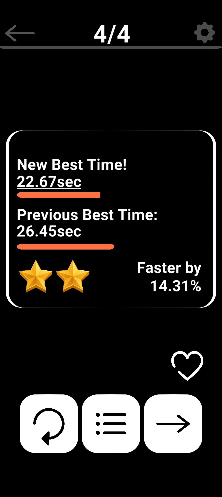
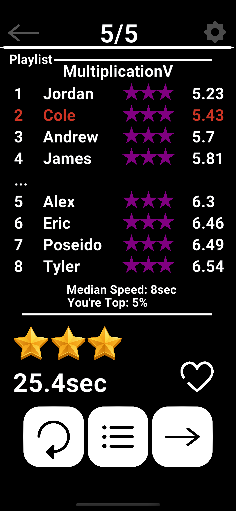
Playlist & Automatic Placement
Queue a custom sequence of levels for varied, targeted practice. Automatic placement assesses grade and knowledge so learners start at the right challenge without manual selection.
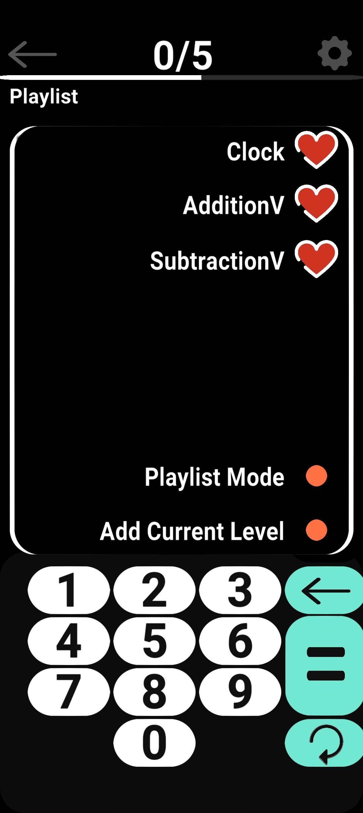
Most Complex Levels
PEMDAS, Exponents, Line Formulation & Factoring
Order of operations, exponents, deriving line formulas, and factoring—plus creative high-achiever problems. These required the most involved interaction logic and state management.
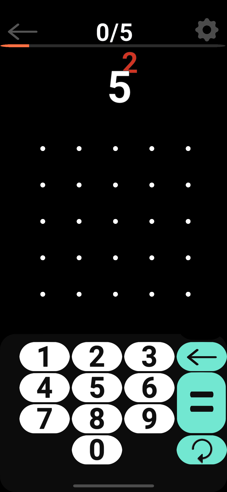
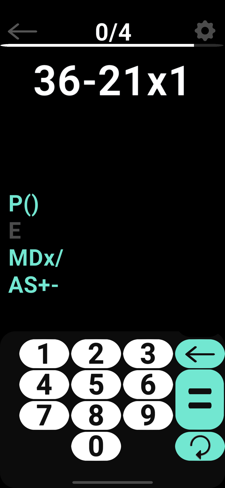
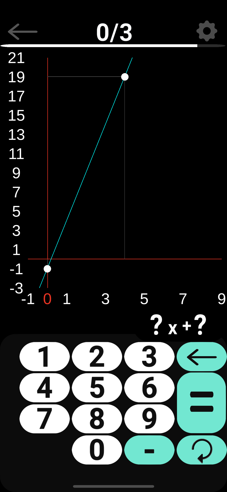
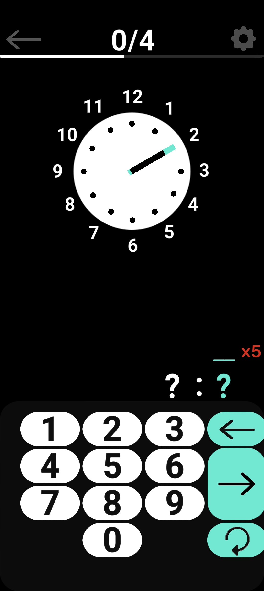
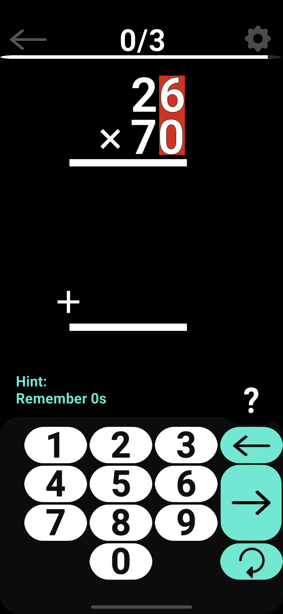
Full Curriculum (K–7th)
Counting & Scattered Counting
Foundational number recognition and counting function. Alternate level is available scattered.
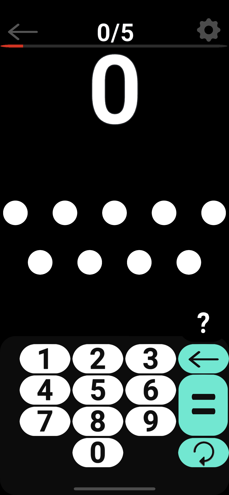
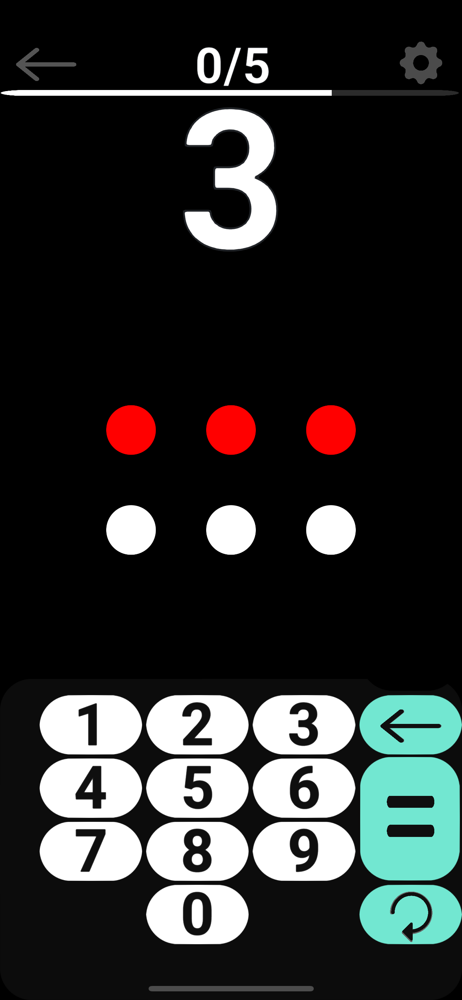
Basic Addition & Subtraction
Interactive & visual addition and subtraction.
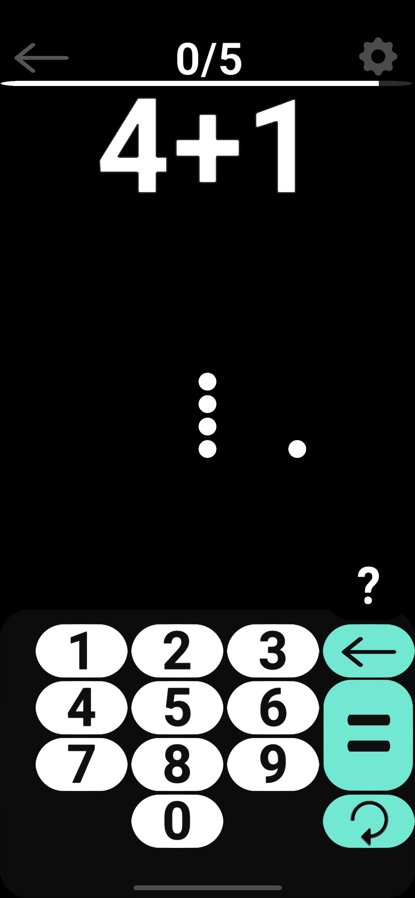
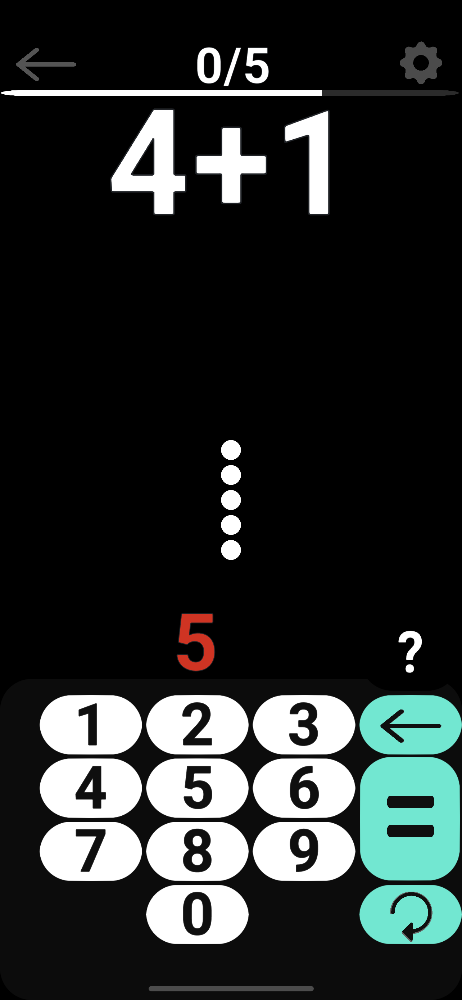
Patterns & Shape Pattern Predict
Recognizing and extending visual patterns.
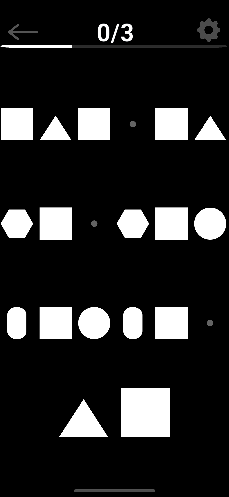
Greater Than / Less Than & Place Values
Comparing quantities and understanding place value.
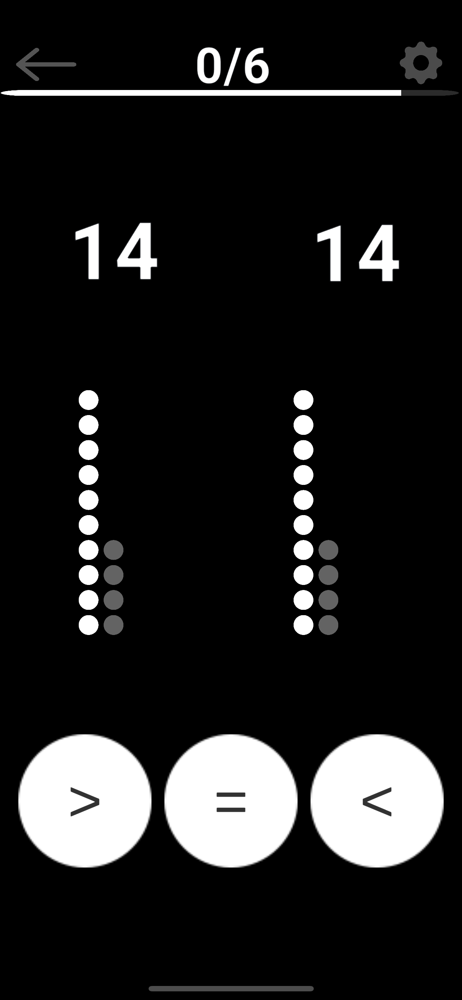
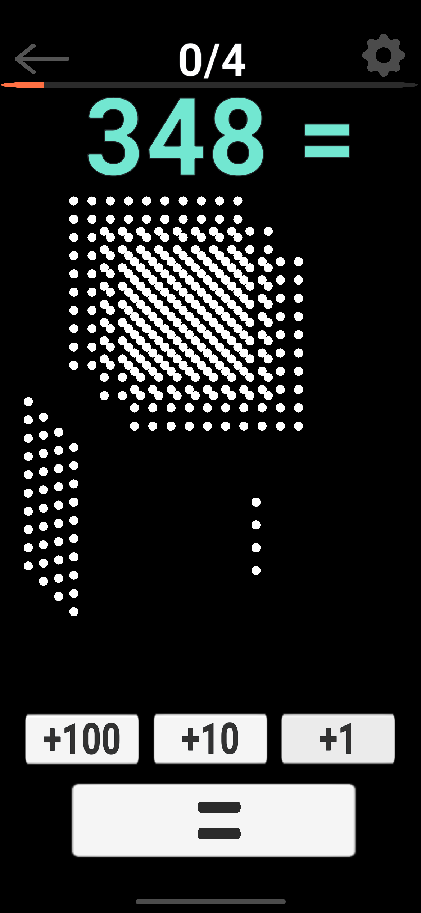
Visual Addition & Subtraction with Tens
Concrete visual models for addition and subtraction involving tens.
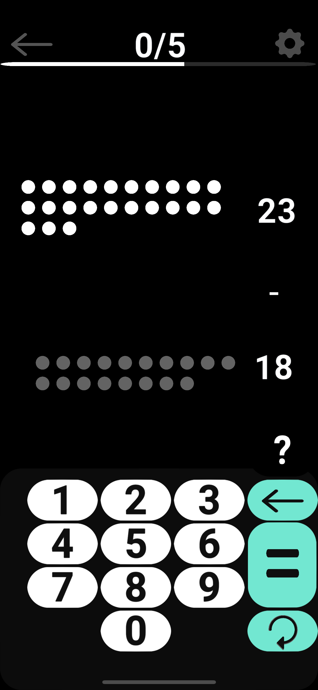
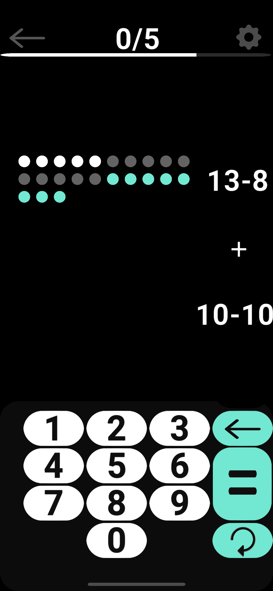
Function Box Addition & Subtraction
Organized, step-by-step addition and subtraction.
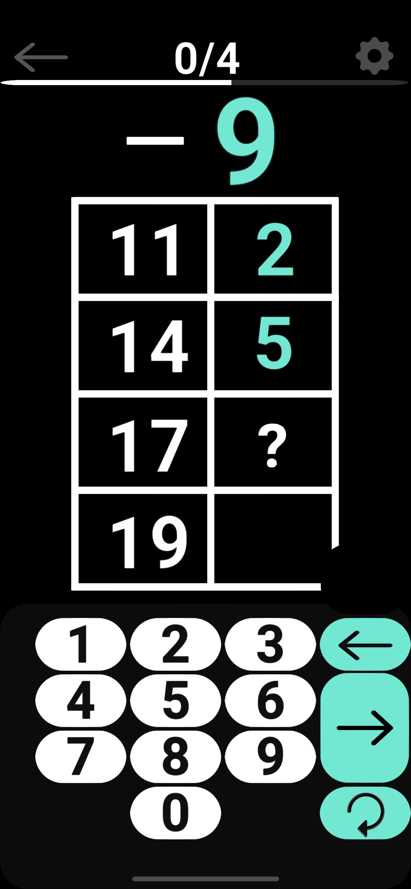
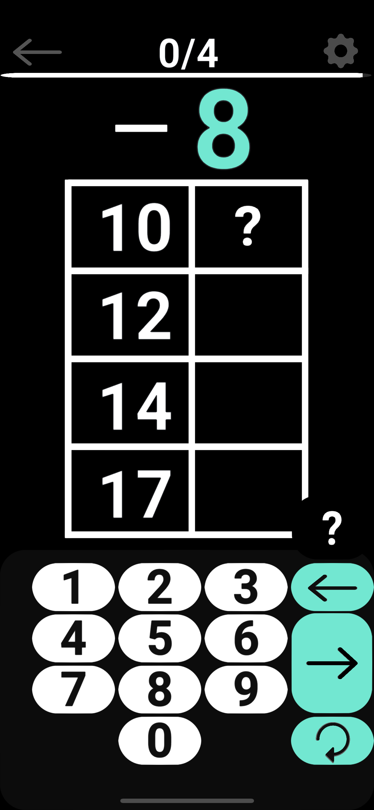
Visual Multiplication & Division
Interactive visual models for multiplication and division.
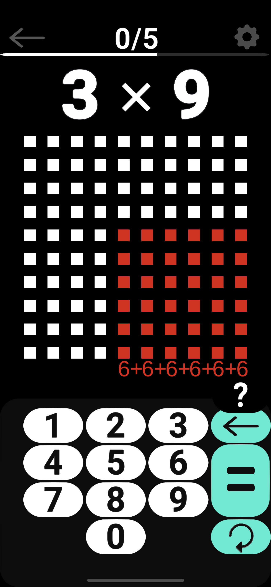
Fractions (Multiple Levels)
Fraction shapes, scaling, and harder scaling challenges across several levels.
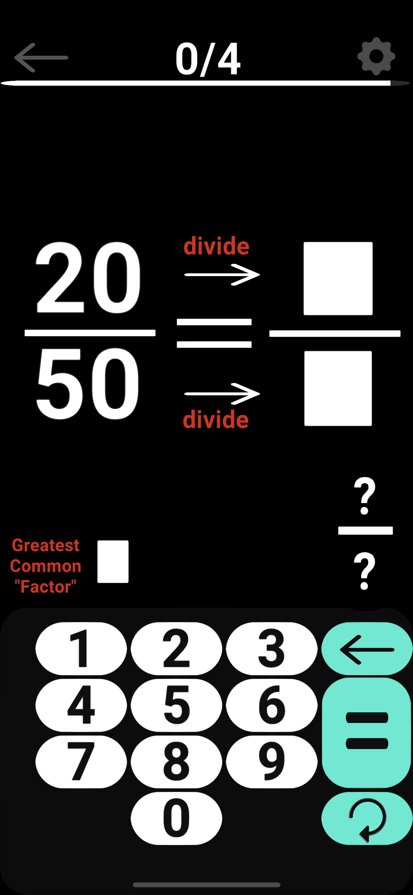